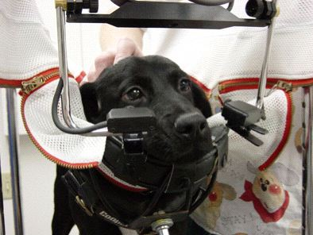
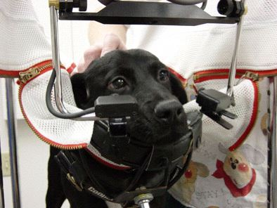

COMLAB is the first mobile apparatus designed to record the eye movements of undrugged, unrestrained, and cooperative dogs using non-invaswive methodology. It has been used in two major studies that have resulted in new therapies for children and adults with both ocular motor and primary visual disorders. "Man's best friends" continue their historical role by helping mankind in new ways that complement their legendary loyalty and companionship.
|
In 1991, Dr. Robert Williams of the University of Tennessee, Memphis, contacted Dr. Dell'Osso after noting that members of a family of Belgian sheepdogs born without an optic chiasm had ocular oscillations. He sent a video of these movements to Dr. Dell'Osso for his opinion. The eye movements appeared to be the canine equivalent of childhood nystagmus (i.e., congenital nystagmus, or CN) with an additional nystagmus, see-saw nystagmus (SSN), superimposed. The only way to confirm that was to record the eye movements of these dogs. However, research of the literature found no mention of canine eye movements, neither the methodology needed nor their characteristics. During an initial visit to Memphis in 1992, Drs. Dell'Osso and Williams made preliminary eye-movement recordings at the University of Tennessee Animal Facility (UTAF) and confirmed both the CN and SSN in the dogs with achiasma. In order to make more accurate eye-movement recordings, Drs. Dell'Osso, Williams, and Jacobs (in 1995) designed and constructed* the Canine Ocular Motility Laboratory (COMLAB), a semi-mobile facility that was based in Memphis in the UTAF for several years while this collaborative study was made.
In 1997, as the study neared its conclusion, Dr. Dell'Osso enlisted the aid of Dr. Richard Hertle in performing a hypothetical surgery, four-muscle tenotomy, on the last remaining achiasmatic dog. The success of that surgery (reducing the dog's nystagmus and improving his vision) led to its successful use in humans for both CN and certain forms of acquired nystagmus. From 1999 - 2002, COMLAB was temporarily relocated to the Animal Facility of the Louis Stokes Cleveland VA Medical Center where Drs. Dell'Osso and Jacobs made improvements, some ocular motility recordings of the remaining members of this family of Belgian sheepdogs, and attampted to breed additional achiasmatic members. During that short period, the eye movements of a small number of dogs, with and without nystagmus, were recorded and the dogs were then adopted out to local families. In 2002, Dr. Jean Bennett of the University of Pennsylbania contacted Dr. Dell'Osso regarding the dogs with Lebers congenital amaurosis (LCA) and nystagmus that she and a multicenter team were attempting to cure with gene therapy. Drs. Dell'Osso and Jacobs moved COMLAB to the University of Pennsylvania, Bolton Large Animal Facility near Philadelphia in order to study the nystagmus and its amelioration due to gene therapy in these dogs. This research, using the canine model of LCA, has resulted in the successful application of gene therapy in human patients, preventing the blindness that results from LCA.NOTE: All photos were taken at either the University of Tennessee Animal Facility or the University of Pennsylvania Large Animal Facility.
Achiasmatic Belgian Sheepdog Study at the University of Tennessee Animal Facility
|


Click to see Pre-Tenotomy Movie
Click to see Post-Horizontal Tenotomy Movie
Click to see Post-Vertical Tenotomy Movie

COMLAB (Bolton Large Animal Facility, Univ of Pennsylvania) <==> Precalibration ("Puppy" Zhong)


"Briards" Crossbred for LCA <==> Puppy in Sling
Preparing for Sling Suspension <==> Sling Suspension


Sling Suspension <==> Ready for Eye Movement Recording
 
 
Eye Movement Recording
Dr. Dell'Osso's Puppy, Lakota, Demonstrating Canine Conjugacy and Disconjugacy
Lakota: Bionocular fixation <==> Lakota: Monocular fixation